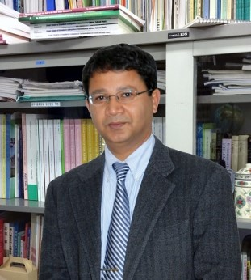

FACULTY PROFILE
Kingshuk Roy
Professor
International Environmental Conservation Laboratory Department of Environmental Science College of Bioresource Sciences Nihon University
Concurrent faculty · Graduate School of Bioresource Sciences
Soil and water conservation · Soil–water–plant systems · Environmental engineering
Professor Roy specialises in soil and water conservation, studying the properties and interactions of soil, water and plants in agricultural and rural areas in Japan and abroad. Field investigation, experiments and analysis address soil erosion, water resource management, water quality and the rehabilitation of degraded agricultural land. Conservation and rehabilitation measures are evaluated in relation to resource properties, their interactions and local conditions, supporting sustainable resource use and environmental conservation.
01 / EDUCATION
Education
Master's in agricultural civil engineering, Yamaguchi University.
Irrigation and water management engineering, Bangladesh Agricultural University.
02 / APPOINTMENTS
Appointments
Professor, College of Bioresource Sciences, Nihon University.
Concurrent faculty, Graduate School of Bioresource Sciences, Nihon University.
Concurrent faculty, Environmental Science Discipline, Advanced Research Institute for the Sciences and Humanities (ARISH), Nihon University.
Associate Professor, Department of International Development Studies, Nihon University.
Associate Professor, Department of International Development Studies, Nihon University.
Lecturer, Department of International Development Studies, Nihon University.
Researcher and visiting researcher, Department of Information Science and Technology, National Agriculture Research Center.
Visiting researcher, College of Bioresource Sciences, Nihon University.
Assistant Engineer, irrigation project of the Danish International Development Agency, Bangladesh.
Research Assistant, project of the Bangladesh Planning Commission and Harvard Institute for International Development.
03 / VISITING APPOINTMENTS
Selected visiting appointments
Short-term Visiting Professor, Natural Resources Management, Asian Institute of Technology, Thailand.
Short-term Visiting Faculty (Associate Professor), Natural Resources Management, Asian Institute of Technology, Thailand.
Short-term Visiting Professor, College of Information and Electrical Engineering, China Agricultural University, Beijing.
Visiting Fellow, Harvard University, Department of Organismic and Evolutionary Biology and Arnold Arboretum.
Visiting Researcher, Department of Land, Air and Water Resources, University of California, Davis.
04 / ACADEMIC SERVICE
Academic and professional service
Advisory Committee member, World Association of Soil and Water Conservation (WASWAC).
Organization websiteDirector (board member), Institute of Environmental Rehabilitation and Conservation (ERECON).
Organization website05 / RESEARCH RECORD
Research record
Full appointments and publications are listed in the university record and researchmap.